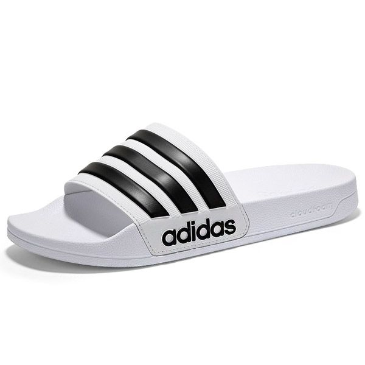
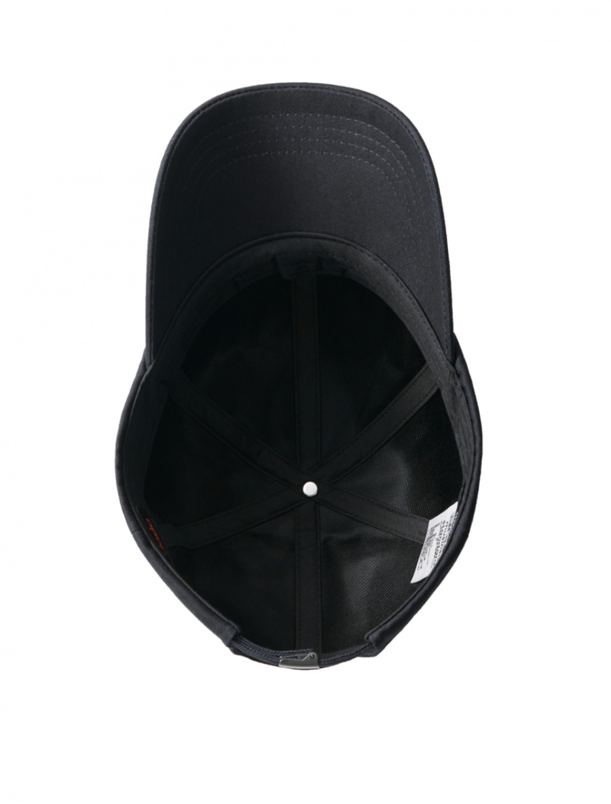
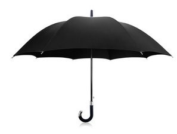
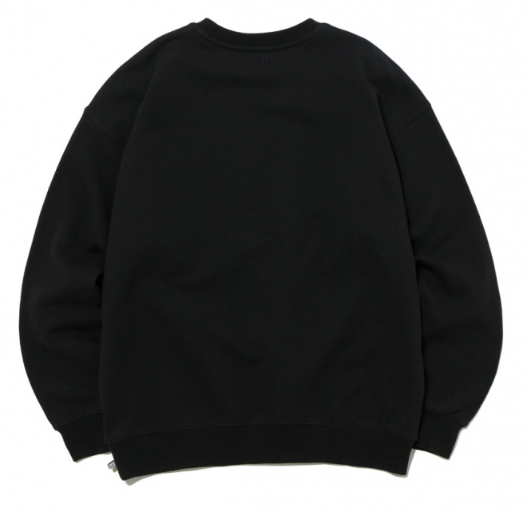

List




About products
IP 마켓에 오신 것을 환영합니다. IP 마켓에서는 현재 슬리퍼, 모자, 우산과 맨투맨 티셔츠를 판매하고 있습니다.
대학생들에게 필수품인 4가지 항목들을 놓치지 마세요! 우선 첫번째 물품인 슬리퍼는 자취를 하거나 기숙사에 사는 대학생에게는 필수품이죠.
가까운 편의점을 갈 때 꼭 신고 나가세요.
두번째 물품인 모자는 밤새 술을 마신 당신을 위한 상품입니다. 밤새 술을 마시고 등교할 때 떡진 머리가 걱정이신가요? 모자를 쓰면 해결이 됩니다. 세번째 물품인 우산은 비가 올 때 비를 안 맞을 수가 있어요! 마지막 물품인 맨투맨 티셔츠는 꼭 사시는 것을 추천드립니다. 대학생다운 코디를 원하는 당신! 맨투맨 티셔츠 하나면 해결!
두번째 물품인 모자는 밤새 술을 마신 당신을 위한 상품입니다. 밤새 술을 마시고 등교할 때 떡진 머리가 걱정이신가요? 모자를 쓰면 해결이 됩니다. 세번째 물품인 우산은 비가 올 때 비를 안 맞을 수가 있어요! 마지막 물품인 맨투맨 티셔츠는 꼭 사시는 것을 추천드립니다. 대학생다운 코디를 원하는 당신! 맨투맨 티셔츠 하나면 해결!